V33.8 — Native CAD review
22 native CAD reviews. SW02 solid landings, retained positive tool-operated clamps, held safety-restraint studies and optional modularity; purchased hardware remains provisional. Full-sheet release remains blocked. Report
Previous landing — three plywood laminations per side
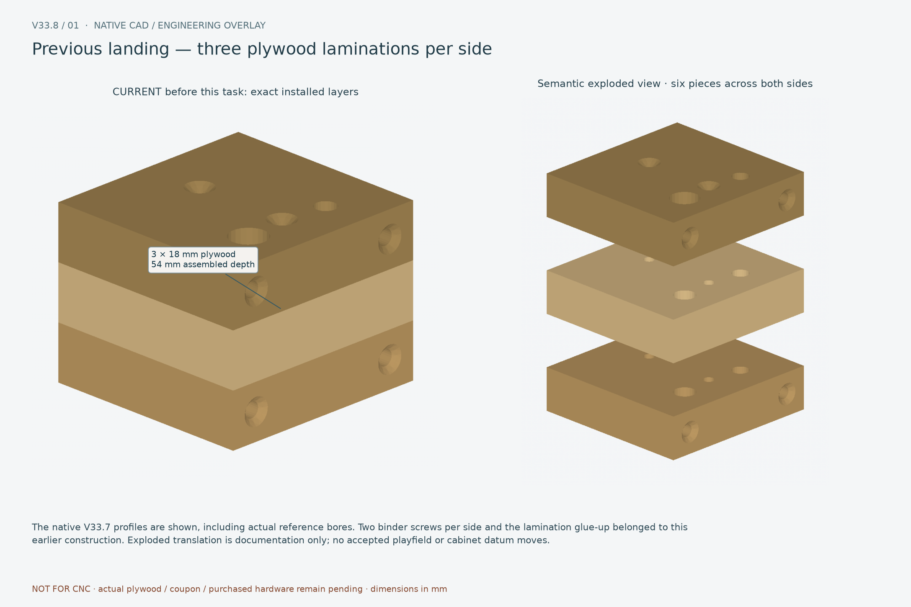
The native V33.7 profiles are shown, including actual reference bores. Two binder screws per side and the lamination glue-up belonged to this earlier construction. Exploded translation is documentation only; no accepted playfield or cabinet datum moves.
SW02 — one shop-made solid block per side
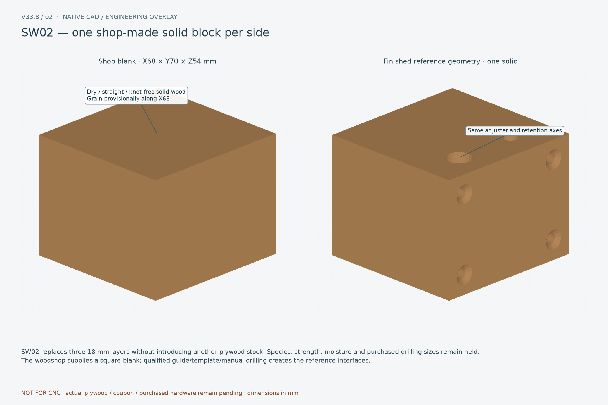
SW02 replaces three 18 mm layers without introducing another plywood stock. Species, strength, moisture and purchased drilling sizes remain held. The woodshop supplies a square blank; qualified guide/template/manual drilling creates the reference interfaces.
SW02 / former union — exact external geometry
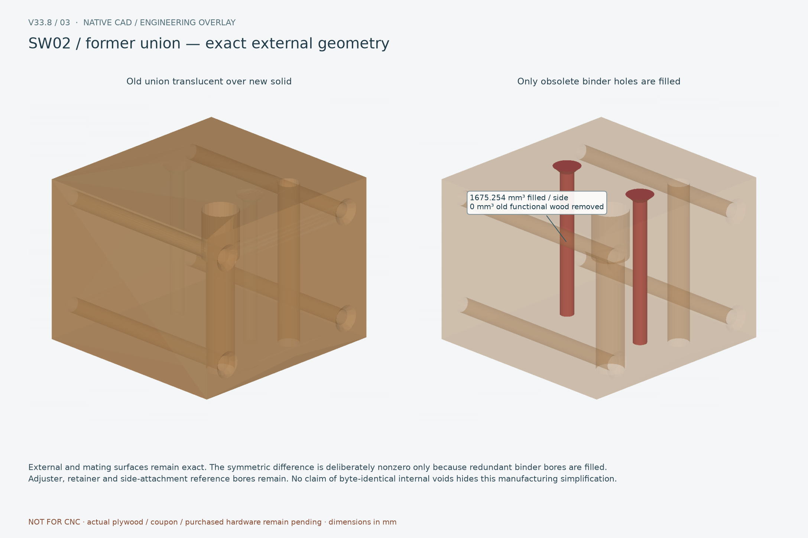
External and mating surfaces remain exact. The symmetric difference is deliberately nonzero only because redundant binder bores are filled. Adjuster, retainer and side-attachment reference bores remain. No claim of byte-identical internal voids hides this manufacturing simplification.
SW02 drilling / adjuster interface
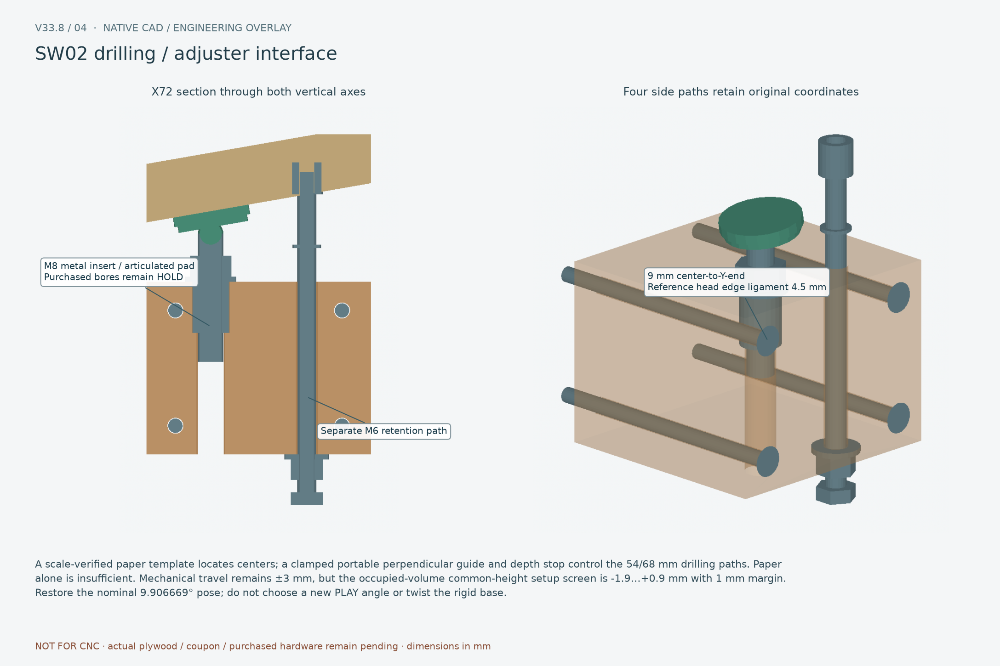
A scale-verified paper template locates centers; a clamped portable perpendicular guide and depth stop control the 54/68 mm drilling paths. Paper alone is insufficient. Mechanical travel remains ±3 mm, but the occupied-volume common-height setup screen is -1.9…+0.9 mm with 1 mm margin. Restore the nominal 9.906669° pose; do not choose a new PLAY angle or twist the rigid base.
Selected retention A — captive M6 tool-operated bolt
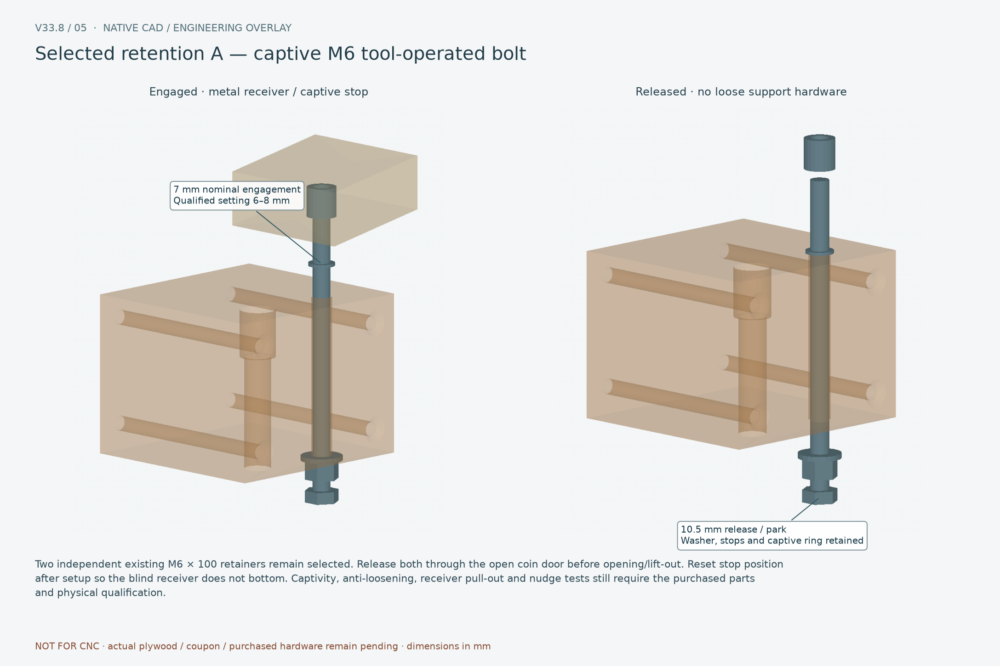
Two independent existing M6 × 100 retainers remain selected. Release both through the open coin door before opening/lift-out. Reset stop position after setup so the blind receiver does not bottom. Captivity, anti-loosening, receiver pull-out and nudge tests still require the purchased parts and physical qualification.
Hand-operated retention B — packaging pass, not promoted
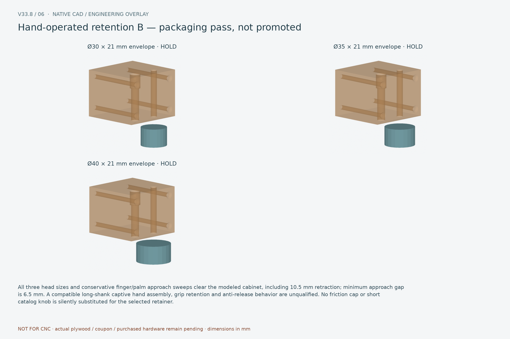
All three head sizes and conservative finger/palm approach sweeps clear the modeled cabinet, including 10.5 mm retraction; minimum approach gap is 6.5 mm. A compatible long-shank captive hand assembly, grip retention and anti-release behavior are unqualified. No friction cap or short catalog knob is silently substituted for the selected retainer.
Quick-pin option C — rejected at the current receiver
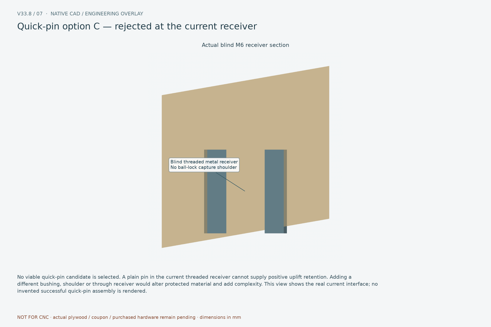
No viable quick-pin candidate is selected. A plain pin in the current threaded receiver cannot supply positive uplift retention. Adding a different bushing, shoulder or through receiver would alter protected material and add complexity. This view shows the real current interface; no invented successful quick-pin assembly is rendered.
Selected tool access — coin door open 110°
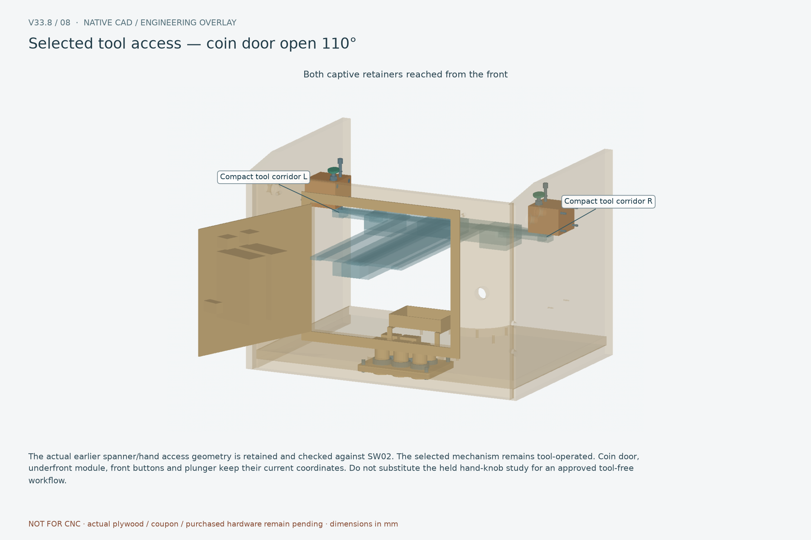
The actual earlier spanner/hand access geometry is retained and checked against SW02. The selected mechanism remains tool-operated. Coin door, underfront module, front buttons and plunger keep their current coordinates. Do not substitute the held hand-knob study for an approved tool-free workflow.
Safety strap study — NO secondary restraint promoted
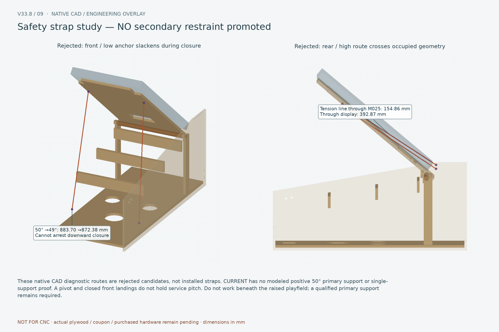
These native CAD diagnostic routes are rejected candidates, not installed straps. CURRENT has no modeled positive 50° primary support or single-support proof. A pivot and closed front landings do not hold service pitch. Do not work beneath the raised playfield; a qualified primary support remains required.
Normal slack — conditional geometry, not a safe service state
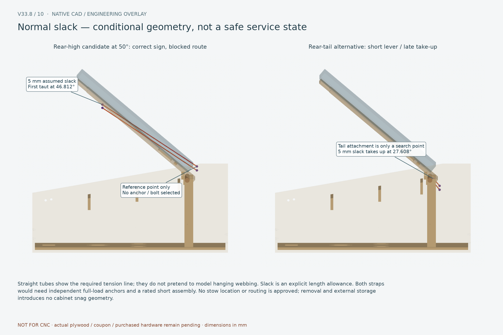
Straight tubes show the required tension line; they do not pretend to model hanging webbing. Slack is an explicit length allowance. Both straps would need independent full-load anchors and a rated short assembly. No stow location or routing is approved; removal and external storage introduces no cabinet snag geometry.
Failure-arrest screen — hypothetical, rejected route
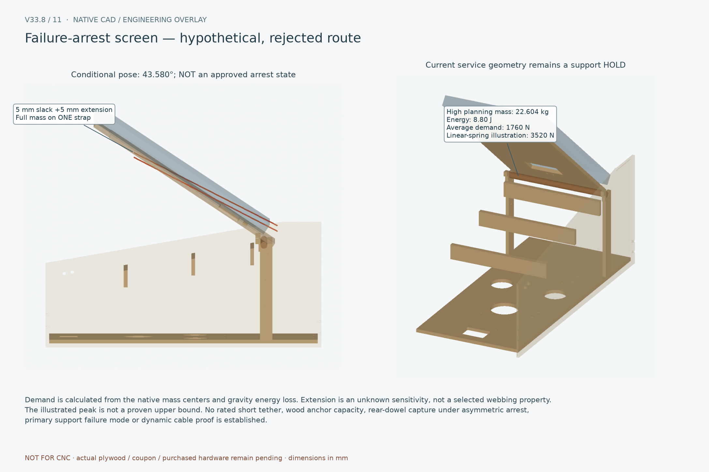
Demand is calculated from the native mass centers and gravity energy loss. Extension is an unknown sensitivity, not a selected webbing property. The illustrated peak is not a proven upper bound. No rated short tether, wood anchor capacity, rear-dowel capture under asymmetric arrest, primary support failure mode or dynamic cable proof is established.
Existing S1/S2/S3 and T1/T2/T3 remain the hardpoints
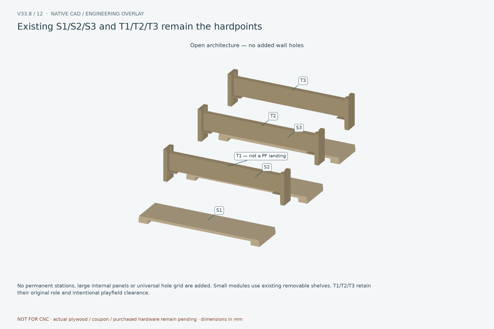
No permanent stations, large internal panels or universal hole grid are added. Small modules use existing removable shelves. T1/T2/T3 retain their original role and intentional playfield clearance.
ACC01 optional 100 × 120 × 12 mm board
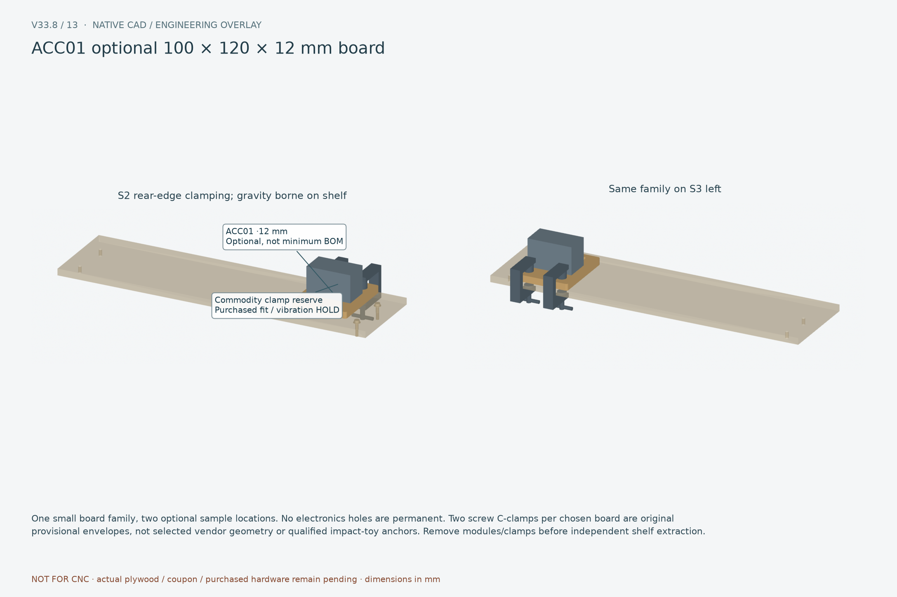
One small board family, two optional sample locations. No electronics holes are permanent. Two screw C-clamps per chosen board are original provisional envelopes, not selected vendor geometry or qualified impact-toy anchors. Remove modules/clamps before independent shelf extraction.
Cable-management vocabulary — reuse current slots
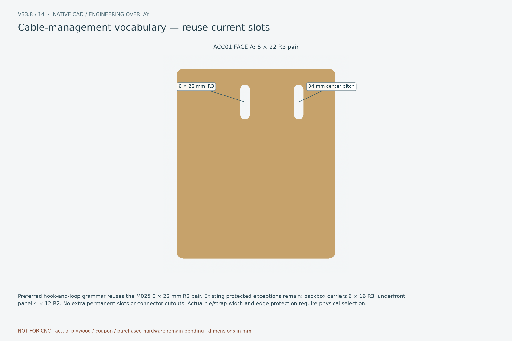
Preferred hook-and-loop grammar reuses the M025 6 × 22 mm R3 pair. Existing protected exceptions remain: backbox carriers 6 × 16 R3, underfront panel 4 × 12 R2. No extra permanent slots or connector cutouts. Actual tie/strap width and edge protection require physical selection.
Low power and signal route zones
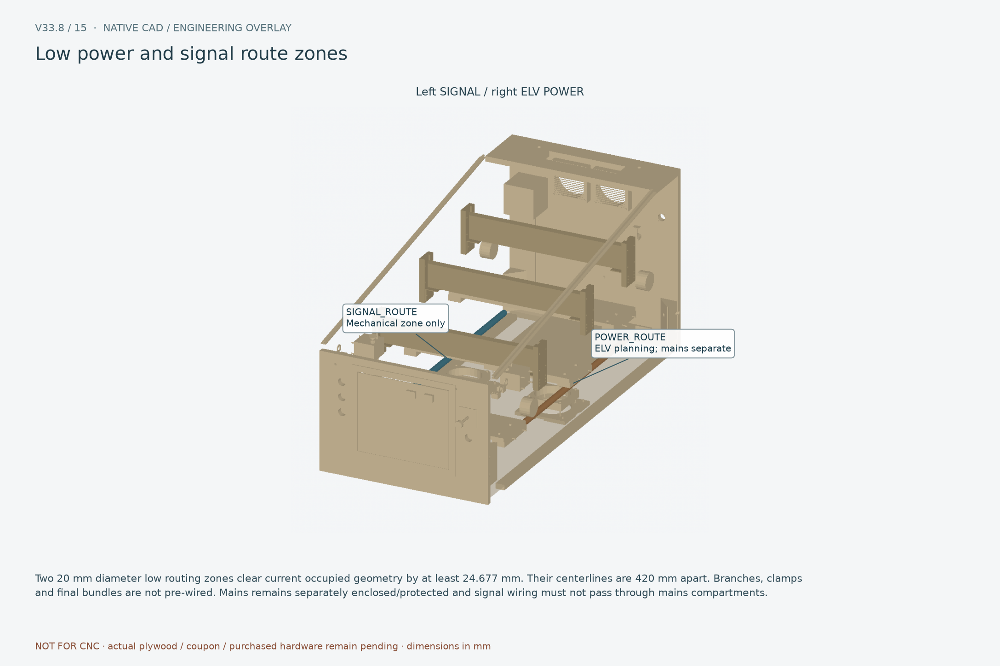
Two 20 mm diameter low routing zones clear current occupied geometry by at least 24.677 mm. Their centerlines are 420 mm apart. Branches, clamps and final bundles are not pre-wired. Mains remains separately enclosed/protected and signal wiring must not pass through mains compartments.
Moving playfield harness — current anchors and window
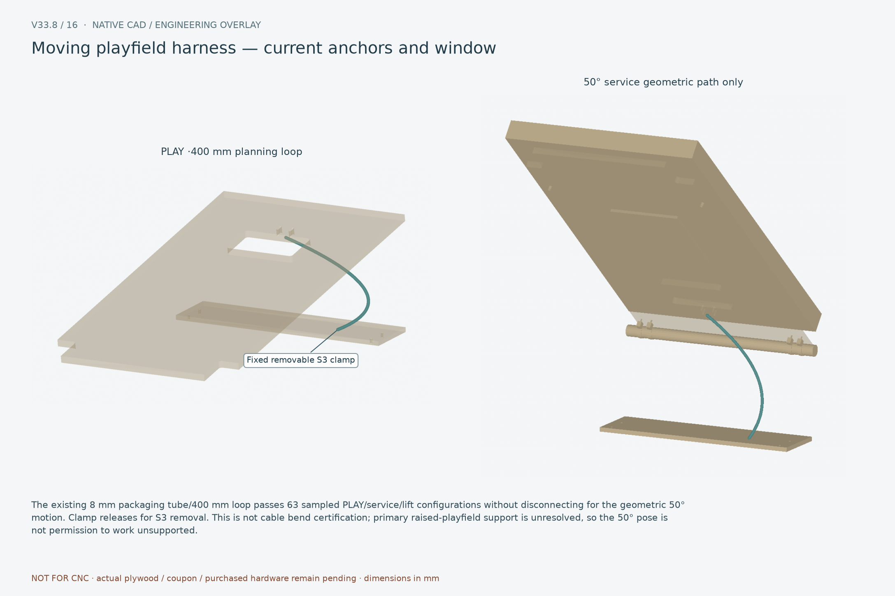
The existing 8 mm packaging tube/400 mm loop passes 63 sampled PLAY/service/lift configurations without disconnecting for the geometric 50° motion. Clamp releases for S3 removal. This is not cable bend certification; primary raised-playfield support is unresolved, so the 50° pose is not permission to work unsupported.
Backbox harness zones — route remains HOLD
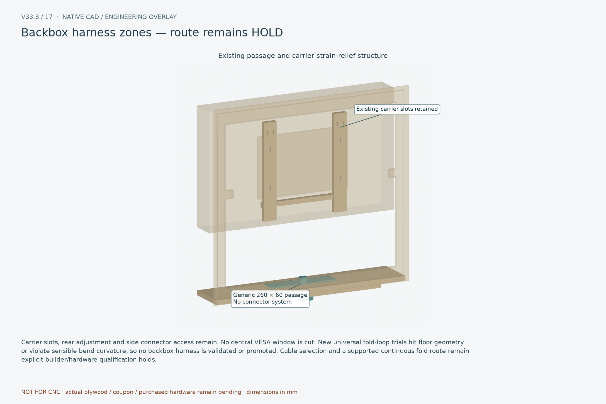
Carrier slots, rear adjustment and side connector access remain. No central VESA window is cut. New universal fold-loop trials hit floor geometry or violate sensible bend curvature, so no backbox harness is validated or promoted. Cable selection and a supported continuous fold route remain explicit builder/hardware qualification holds.
Dry-fit assembly — captured shell before closure
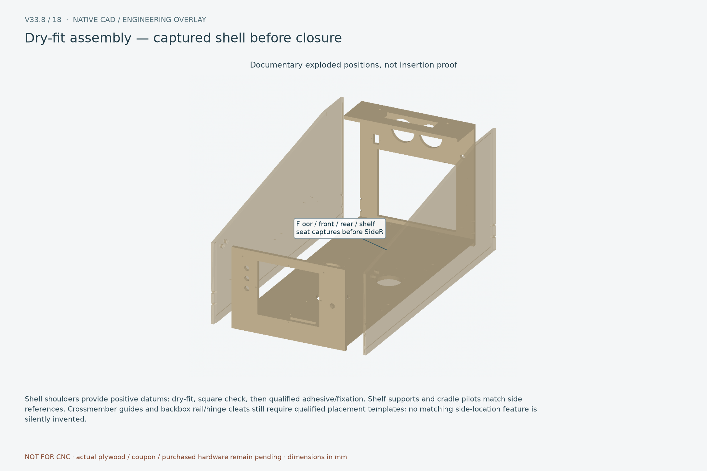
Shell shoulders provide positive datums: dry-fit, square check, then qualified adhesive/fixation. Shelf supports and cradle pilots match side references. Crossmember guides and backbox rail/hinge cleats still require qualified placement templates; no matching side-location feature is silently invented.
Interior without optional boards
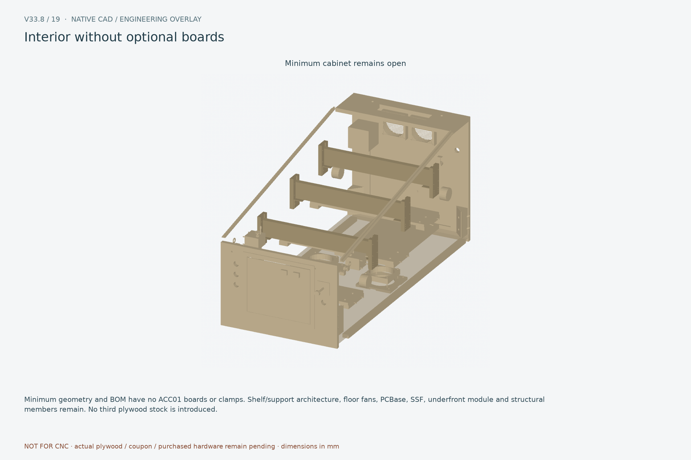
Minimum geometry and BOM have no ACC01 boards or clamps. Shelf/support architecture, floor fans, PCBase, SSF, underfront module and structural members remain. No third plywood stock is introduced.
Interior with optional sample boards
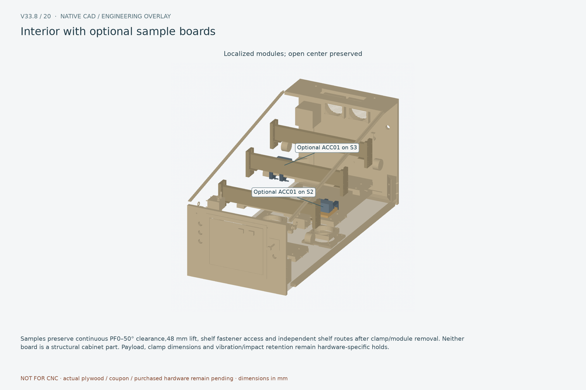
Samples preserve continuous PF0–50° clearance,48 mm lift, shelf fastener access and independent shelf routes after clamp/module removal. Neither board is a structural cabinet part. Payload, clamp dimensions and vibration/impact retention remain hardware-specific holds.
Packaging impact — actual contents / preliminary bundles
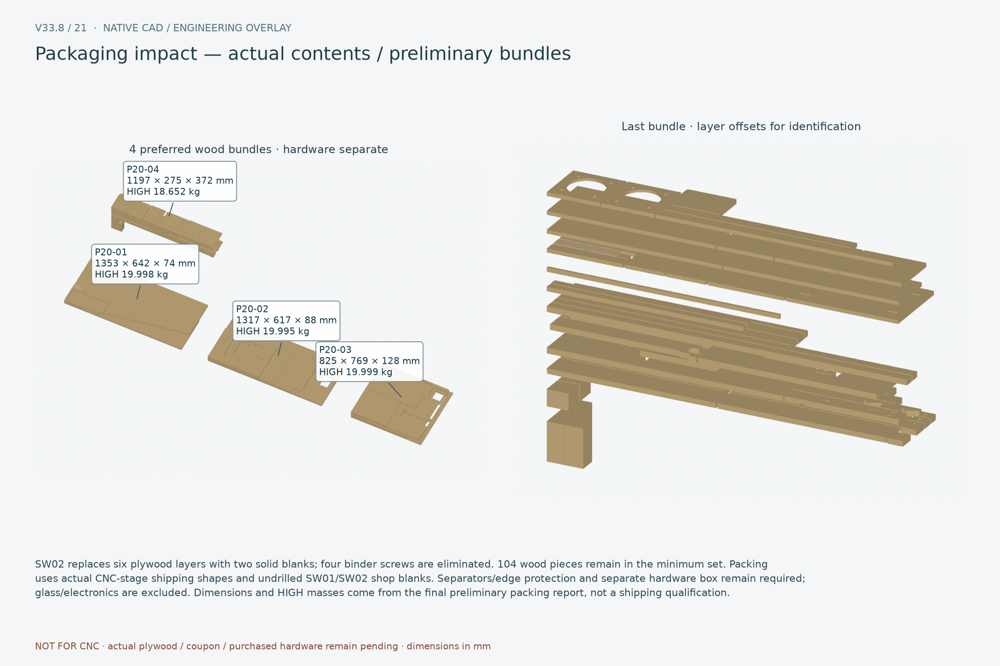
SW02 replaces six plywood layers with two solid blanks; four binder screws are eliminated. 104 wood pieces remain in the minimum set. Packing uses actual CNC-stage shipping shapes and undrilled SW01/SW02 shop blanks. Separators/edge protection and separate hardware box remain required; glass/electronics are excluded. Dimensions and HIGH masses come from the final preliminary packing report, not a shipping qualification.
Completed cabinet — protected architecture retained
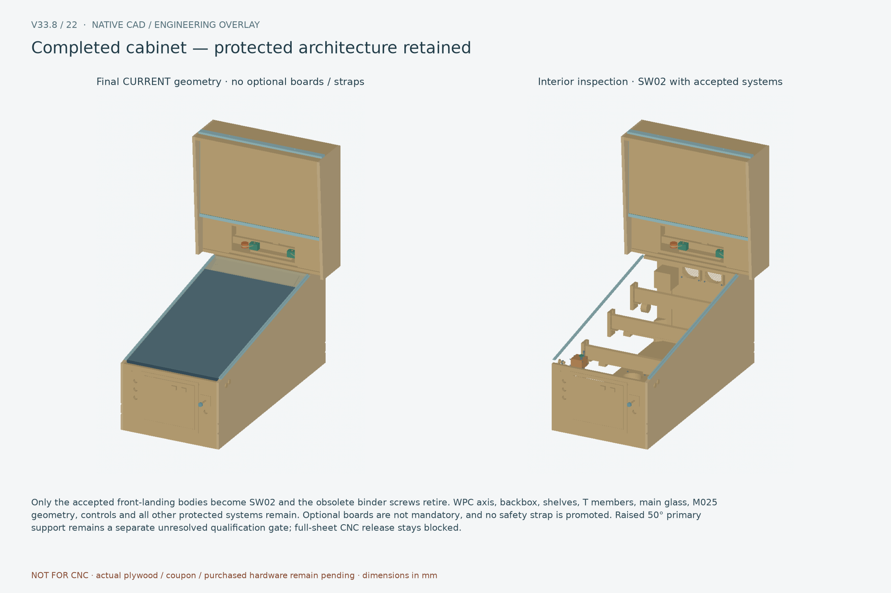
Only the accepted front-landing bodies become SW02 and the obsolete binder screws retire. WPC axis, backbox, shelves, T members, main glass, M025 geometry, controls and all other protected systems remain. Optional boards are not mandatory, and no safety strap is promoted. Raised 50° primary support remains a separate unresolved qualification gate; full-sheet CNC release stays blocked.